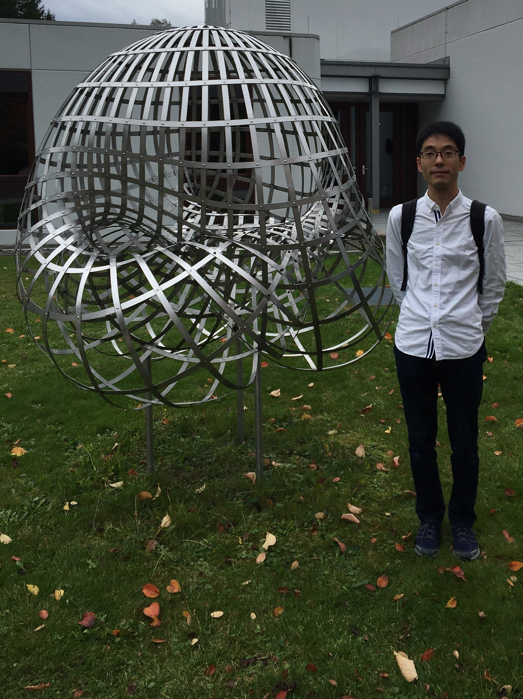

English
Japanese
Last updated: January 15, 2021
Naoki Fujita
The University of Tokyo, Graduate School of Mathematical Sciences
e-mail: nfujita ``at'' ms.u-tokyo.ac.jp

Name:
Affiliation:
-
JSPS Research Fellow (PD) (No. 19J00123)
Graduate School of Mathematical Sciences
The University of Tokyo
3-8-1 Komaba, Meguro-ku, Tokyo, 153-8914, Japan
Research Areas:
Research Interests:
Employment:
-
Apr. 2019 – present
Graduate School of Mathematical Sciences, The University of Tokyo
JSPS Research Fellow (PD) (No. 19J00123)
-
Apr. 2018 – Mar. 2020
Meiji Gakuin University
Part-time Lecturer
-
Apr. 2018 – Mar. 2019
Department of Mathematics, Tokyo Institute of Technology
JSPS Research Fellow (PD, changed from DC1) (No. 16J00420)
-
Apr. 2016 – Mar. 2018
Department of Mathematics, Tokyo Institute of Technology
JSPS Research Fellow (DC1) (No. 16J00420)
Education:
-
Apr. 2016 – Mar. 2018
Doctoral course at Department of Mathematics, Tokyo Institute of Technology
Supervisor: Satoshi Naito
Doctoral thesis: Newton-Okounkov polytopes of Schubert varieties and crystal bases
-
Apr. 2014 – Mar. 2016
Master's course at Department of Mathematics, Tokyo Institute of Technology
Supervisor: Satoshi Naito
Master thesis: Newton-Okounkov bodies for Bott-Samelson varieties and string polytopes for generalized Demazure modules
-
Apr. 2010 – Mar. 2014
Undergraduate course at School of Science, Tokyo Institute of Technology
Long-Term Visits (Abroad):
-
July 2016 – Oct. 2016
Major Thematic Program on Combinatorial Algebraic Geometry
Fields Institute, Toronto, Canada
Grants and Supports:
-
Apr. 2020 – Mar. 2024
Grant-in-Aid for Early-Career Scientists (No. 20K14281)
Japan Society for the Promotion of Science (JSPS)
-
Apr. 2019 – Mar. 2022
Grant-in-Aid for JSPS Fellows (PD) (No. 19J00123)
Japan Society for the Promotion of Science (JSPS)
-
Apr. 2016 – Mar. 2019
Grant-in-Aid for JSPS Fellows (DC1, changed to PD in Apr. 2018) (No. 16J00420)
Japan Society for the Promotion of Science (JSPS)
Membership:
-
The Mathematical Society of Japan